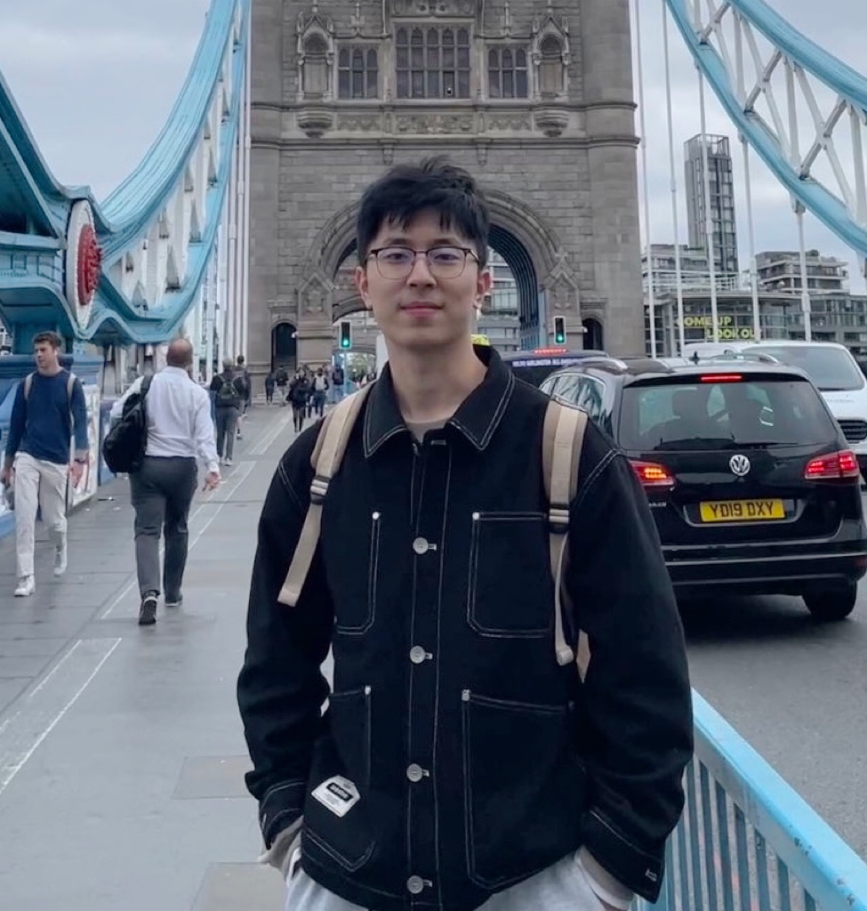

|
Wenzhe Cai | 蔡文哲 I have been a PhD student since 2019 in the School of Automation, Southeast University, advised by Prof. Changyin Sun. Prior to this, I also got my bechlor degree in the school of Automation, Southeast University. Currently, I am a visiting student in the Center on Frontiers of Computing Studies (CFCS) at Peking University, advised by Prof. Hao Dong. I also used to be an intern at Noah's Ark Lab and Pengcheng Laboratory. |


|
{kind=link}
ResearchMy research interests include Embodied AI, Visual Navigation and Deep Reinforcement Learning. |

|
Bridging Zero-Shot Object Navigation and Foundation Models through Pixel-Guided Navigation Skill
Wenzhe Cai, Siyuan Huang, Guangran Cheng, Yuxing Long, Peng Gao, Changyin Sun, Hao Dong IEEE Conference on Robotics and Automation (ICRA), 2024 website / paper / github We propose a pure RGB-based navigation skill, PixNav, which takes in an assigned pixel as goal specification and can be used to navigate towards any objects. |

|
Discuss Before Moving: Visual Language Navigation via Multi-expert Discussions
Yuxing Long, Xiaoqi Li, Wenzhe Cai, Hao Dong IEEE Conference on Robotics and Automation (ICRA), 2024 website / paper DiscussNav agent actively discusses with multiple domain experts before moving. And with multi-expert discussion, our method achieves zero-shot visual language navigation without any training. |
|
|
Multi-Task Reinforcement Learning With Attention-Based Mixture of Experts
Guangran Cheng, Lu Dong, Wenzhe Cai, Changyin Sun IEEE Robotics and Automation Letters (RA-L), 2023 paper / github We propose a soft mixture of experts (MoE) based reinforcement learning method to tackle multi-task robotics control problems, which effectively captured the latent relationships among different tasks. |
|
|
XuanCE: A Comprehensive and Unified Deep Reinforcement Learning Library
Wenzhang Liu, Wenzhe Cai, Kun Jiang, Guangran Cheng, Yuanda Wang, Jiawei Wang, Jingyu Cao, Lele Xu, Chaoxu Mu, Changyin Sun Journel of Machine Learning Research (JMLR), 2023 (under review) github / paper XuanCE is an open-source ensemble of Deep Reinforcement Learning (DRL) algorithm implementations, which supports both single-agent RL and multi-agents RL algorithms. |
|
|
Robust Navigation with Cross-Modal Fusion and Knowledge Transfer
Wenzhe Cai*, Guangran Cheng*, Lingyue Kong, Lu Dong, Changyin Sun IEEE Conference on Robotics and Automation (ICRA), 2023 website / paper / github We propose a efficient distillation architecture to tackle the sim-to-real gap of an RL-based navigation policy. Our experiment shows our architecture outperforms the domain randomization techniques. |

|
DGMem: Learning Visual Navigation Policy without Any Labels by Dynamic Graph Memory
Wenzhe Cai, Teng Wang, Guangran Cheng, Lele Xu, Changyin Sun Applied Intelligence, 2024 paper We discuss the self-supervised navigation problem and present Dynamic Graph Memory (DGMem), which facilitates training only with on-board observations. |

|
Learning a World Model with Multi-Timescale Memory Augmentation
Wenzhe Cai, Teng Wang, Jiawei Wang, Changyin Sun IEEE Transactions on Neural Networks and Learning Systems (TNNLS), 2022 paper We propose a novel action-conditioned video prediction method which introduces optical flow prediction to model the influence of actions and incorporate the optical-flow based image prediction to improve the long-term prediction quality. |
ServicesReviewer: TNNLS, ICRA 2024. |
Honers & Awards SEU Doctoral Entrance Scholarship (￥20000) |